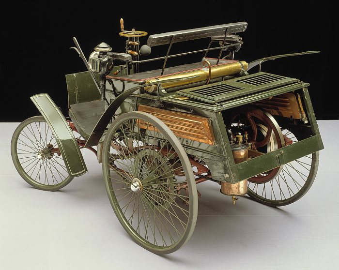
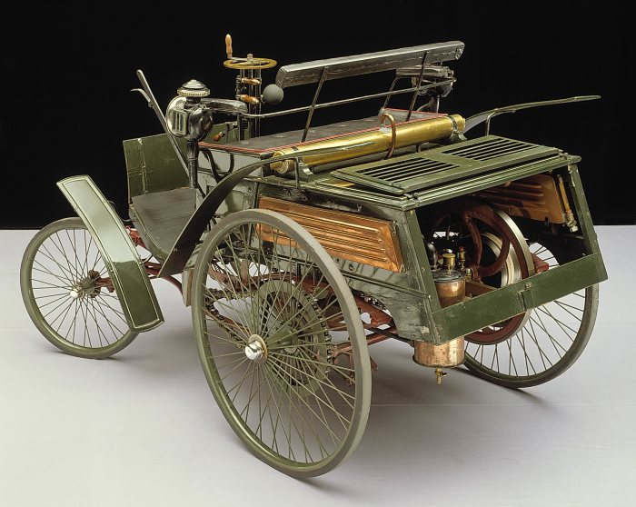

The first production car with a recorded speed was the 1894 Benz Velo that had a top speed of just 19.31 km/h. Few verified records exist from that point until around 1950, when the Jaguar XK120 set a production car speed record of 200.52 km/h.
From this point on, it became a trend for automotive publications to do their own top speed test.
 
